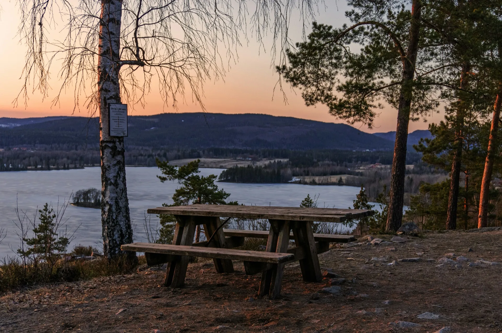

The forest fifteen minutes north is where locals actually spend their summers
Oslo's main sights are worth seeing. The Opera House, Vigeland Park, Aker Brygge — they deliver on their reputation, and any guide pointing you there isn't wrong. But in June, July and August, you share all of them with thousands of strangers. You finish the day having seen Oslo's greatest hits, not Oslo. There is a version of the city most tourists never find, and it starts fifteen minutes north of the waterfront.
Vigeland Park has 200-odd bronze and granite sculptures across a large formal garden. It is genuinely extraordinary, and Gustav Vigeland is worth knowing about. It is also, between June and August, full of tour groups moving in formation and selfie sticks at every angle. Go before 9am and it's a different experience. Go at noon on a Tuesday in July and you're in a slow-moving queue.
The Opera House roof is one of the best ideas in modern architecture — a sloping marble surface designed to be walked on, overlooking the fjord. On a clear morning with no one else around, it earns every word written about it. In peak season, you're inching forward behind a crowd.
Aker Brygge is a pleasant waterfront strip. It looks exactly like its photographs. It is also a tourist zone, which means its prices reflect that. The food is fine; the experience is generic.
None of this is a reason to skip these places. The problem isn't that they're bad. It's that if you spend all your time on them, you leave thinking you've seen Oslo. You've seen the front of it.
Fifteen minutes north of Oslo Central Station, the city ends and the forest begins. The Nordmarka stretches north for 400 square kilometres — pine and birch woodland, gravel roads, cold forest lakes, and a handful of staffed mountain cabins serving coffee and waffles. Locals have been cycling, hiking and skiing into it for generations. It is where Osloites go when they want to be outside. Almost no tourists ever reach it.
The reason is simple: there is no obvious entry point. No sign at the edge of town saying "forest this way." The trailheads are in the northern neighbourhoods — Kjelsås, Maridalen, Sørkedalen — a metro ride or a fifteen-minute bike from the hotel district. Once inside, the trail network forks and multiplies without a clear hierarchy. Without local knowledge, it is easy to spend an hour on the wrong path and loop back to where you started. These are solvable problems. They just require someone who knows the place.
The Marka has real climbing. The Ring 4 loop — the classic circuit that Oslo cyclists have been riding for generations — gains around 800 metres of elevation over 45 kilometres. On a city hire bike, that's a serious undertaking. On a gravel bike, it's a good workout. On an e-bike, it's accessible to almost anyone — the climbs become manageable, the distance stops being a barrier, and the forest opens up fully regardless of fitness level.
This is where the e-bike argument is actually strongest: not for the flat waterfront routes, but for getting somewhere you genuinely couldn't otherwise reach. An hour into the Marka on an e-bike puts you in a different world. The city is still visible on clear evenings from the higher trails — Oslo spread below in the valley, the fjord catching the light — but the crowds and the noise are gone.
A gravel bike without motor assistance is the purest way to ride it, and gives you more feel for the terrain. Both are right. What matters is having the right bike for the surface, which means not a city hire bike with narrow tyres and no clearance.
The Oslo Gravel Short is the two-hour version: 13 km, gentle climbing, good gravel through pine and birch. Suitable for families, first-timers, anyone who wants a real taste of the forest without a full-day commitment. You meet your guide at Sognsvann, the end of metro line 5.
The Oslo Gravel Loop runs three hours and 25 km, reaching the deeper sections of the forest — denser trees, higher ridges, occasional lake views — with enough distance that you genuinely feel like you've gone somewhere.
The Nordmarka Forest Ring 4 is the classic: 45 km, four hours, waffle stop at Kikutstua cabin, the full loop that locals have ridden for generations. This is what the Marka is actually about.
At the far end is the Epic Marka Endurance — 85 km, a full day, into the parts of the forest that even most Osloites have never reached. Remote lakes, long climbs, old logging roads. For riders who want to disappear properly.
Prefer to explore on your own schedule? You don't need a guide. Rent a gravel bike or e-bike and ride into the Marka yourself — pickup at Sognsvann puts you on the forest's edge the moment you step off the metro.
It is not Vigeland Park. It is not the Opera House. Those are worth your time, and done well — early, without a tour group, with a local to tell you what you're looking at — they're excellent.
The real trap is spending three days in Oslo on the standard circuit and flying home thinking you've understood the city. Oslo is a city of twelve months of outdoor culture, of people who ski to work in winter and swim in forest lakes in August. That culture lives in the Marka, not on the waterfront. The forest is fifteen minutes away. Most visitors never find it.
If you would rather go on foot than by bike, Oslo Hiking Tours run guided hikes from the city — Vettakollen sits right on Oslo's border — and further out to Galdhøpiggen and Gaustatoppen.
Go with a private guide who handles the route, or rent a bike and explore the Nordmarka at your own pace. From two hours to a full day.
Guided gravel tours Bike rentalVigeland Park, the Opera House and Aker Brygge are genuinely worth seeing — but in summer they're busy, predictable and priced for tourists. The real trap is spending all your time on that circuit and leaving thinking you've seen Oslo. The Nordmarka forest, fifteen minutes north, is what most visitors never find.
Go early — before 9am, Vigeland Park and the Opera House are genuinely quiet. Better still, head into the Nordmarka forest. It's almost never crowded, even in July. Most tourists never reach it. A gravel bike or e-bike from your hotel gets you there in under thirty minutes.
The Nordmarka forest is Oslo's least-visited major attraction. It starts fifteen minutes from the city centre by bike, covers 400 square kilometres of pine and birch, and is where Osloites spend their summers — cycling, hiking, swimming in forest lakes. Almost no tourists find it on their own.
Yes. The forest edge begins in Oslo's northern neighbourhoods — roughly fifteen minutes by bike from most central hotels. A guided tour handles hotel pickup and navigation, so you ride from your door into the trees without planning a route through an unfamiliar city.
Yes. The Ring 4 loop gains around 800 metres of elevation over 45 kilometres. On an e-bike the climbs are comfortable and the distance stops being a barrier. It opens up the full forest experience to riders of any fitness level — and it's one of the strongest arguments for an e-bike in Oslo.
Yes, with the right route. The Oslo Gravel Short (13 km, 2 hours) has gentle climbing and suits most fitness levels, including families on e-bikes. The Gravel Loop (25 km) and Ring 4 (45 km) involve real climbing and suit recreational riders and above.